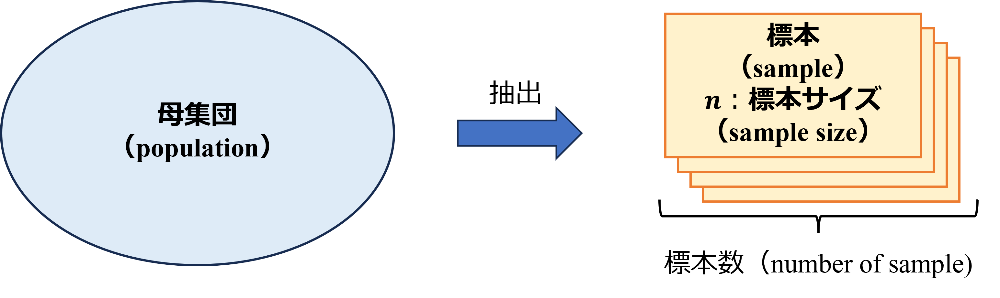
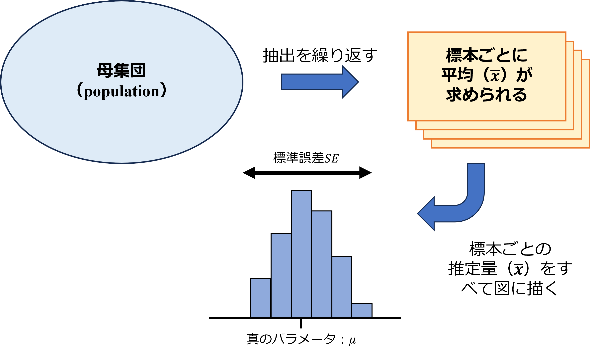
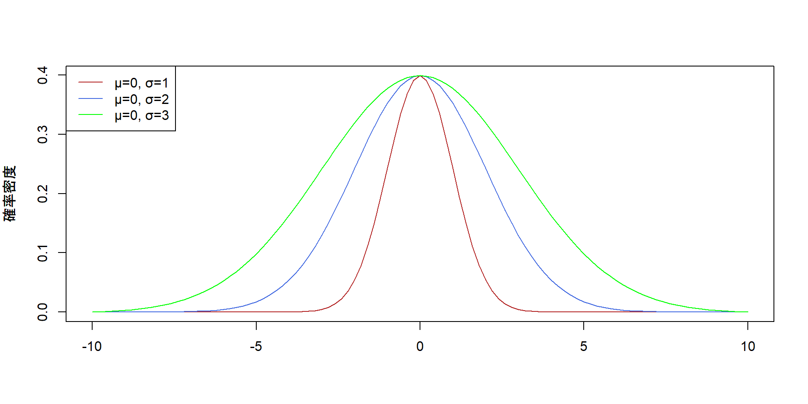
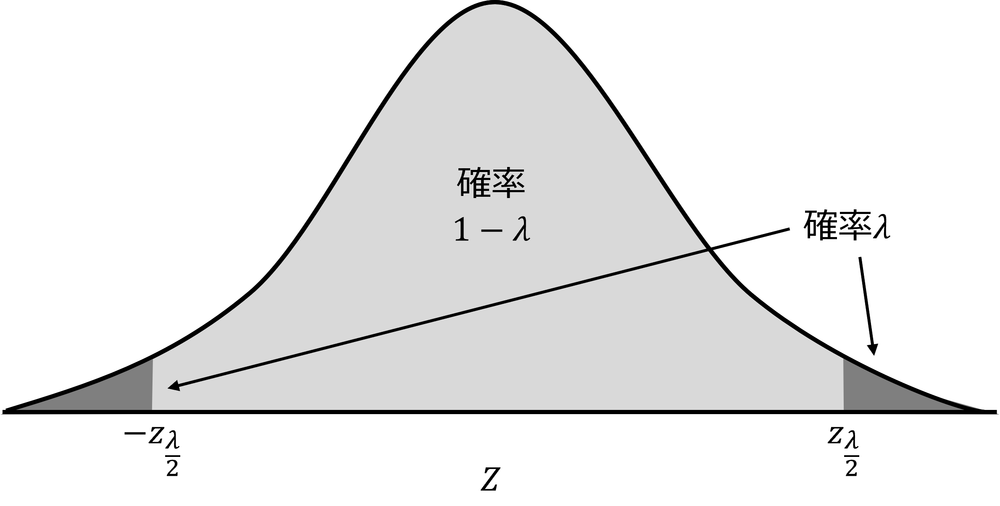

2026年度 経済データ分析演習B2
2026-11-21
出席登録は13:00から14:30まででに登録してください
出席番号
474066
クラスコード
j4osjaqj
注意：親講義（経済データ分析B）の第2回から第6回までの範囲ですので、詳しくは親講義の内容をしっかりと復習してください
母集団(population)
調査対象となる人・物の集団全体のこと
標本(sample)
調査のために抽出された母集団の一部のデータ

推定(estimation)
母集団を特徴づける未知のパラメータ（母数、parameter）を標本から推測すること

大数の法則(law of large numbers)
数学的結果から、標本数を十分に増やしていくと、標本平均の平均は母平均\(\mu\)に近づく
中心極限定理(central limit theorem)
標本サイズ\(n\)が十分に大きければ、標本分布も釣り鐘型の左右対称な正規分布となる


仮説検定 (hypothesis testing)
母集団に関するある仮説が、推定された値から統計的に成り立つのか検証
仮説検定の論理
対立仮説\(H_1\)の正しさを主張するために、対立仮説とは反対の帰無仮説\(H_0\)の正しさを否定する
\(H_0: \mu = \mu_0\)
\(H_1: \mu \neq \mu_0\)
\(H_0: \mu = 950\)
\(H_1: \mu \neq 950\)
第1種の過誤と第2種の過誤
| 真実 | |||
|---|---|---|---|
| \(H_0\) | \(H_1\) | ||
| 採択仮説 | \(H_0\) | 〇 | II |
| \(H_1\) | I | 〇 |
有意水準(significant level)
帰無仮説が間違っている（棄却する）と判断できる基準となる確率
有意水準
2標本間の平均の差の検定： 二つの標本に差があるのか検定する
その応用
レポート用フォルダ作成
レポート用データのダウンロード&アップ
これらをしないと誤提出する可能性があるので、必ずすること
レポート用Colabファイルを開く
ファイル名の変更
第6回講義課題のColabファイルの再利用
中間レポートの作成
今後の講義課題
レポートで使用する変数をメモする
データ型に合わせて中身をチェック
文字列型ではfactor関数とsummary関数
数値型ではget_summary_stat関数
連続変数に関しては、ggplot関数を使って外れ値を設定
以上からわかることをメモする
加工データの作成
レポートで使用する変数を作成
変数ラベルをつける
記述統計量の作成
記述統計量はレポートの条件
グラフの作成
少なくとも一つ以上のグラフが必要
棒グラフ
散布図
クロス集計表
少なくとも一つ以上のクロス集計表が必要
メモと相談
メモ
相談